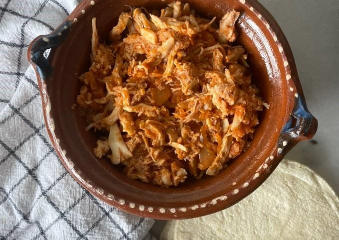
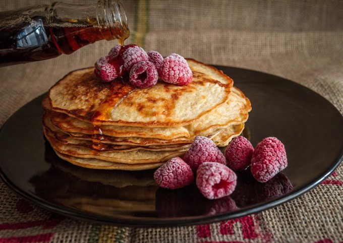

Explora mi recetario
Platos Fuertes
Postres
Sin Gluten
Comparte tu receta
Platos Fuertes

Da click en la imagen para desplegar la receta
Sopa Azteca
Bistec de cerdo con calabacitas
Albóndigas
Tinga de pollo
Rajas poblanas con pollo
Postres
Da click en la imagen para desplegar la receta
Pan de manzana y canela
Latte de pumpkin spice
Gelatina de Oreo y chocolate
Pay de limón
Pastel de chocolate
Sin Gluten

Da click en la imagen para desplegar la receta
Sandwich de nopal
Arroz blanco con elote y chile poblano
Chiles Rellenos
Panqué de calabaza
Hotcakes de harina de almendras
Comparte tu receta favorita
Nombre
Título de la receta
Sección a la que pertenece la receta
Selecciona una opción
Platos Fuertes
Postres
Sin Gluten
Descripción breve de la receta
Comparte una foto del resultado de tu receta
send
Enviar